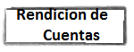

PROGRAMA DE TUTORIAS

La facultad de telematica comparte del Plan Institucional de Desarrollo de su alma mater, la Univercidad de Colima, el sentido de educacion al considerar no solo la trasmicion de conosimiento sino tambien como un aprendisaje en el que la persona aprende a ser autonoma y a orientarse con etica y principios, para ello se a emprendido acciones de capasitacion de los profesores para que acompañen a los estudiantes en su trayectoria academica, sin dejar de lado el desarrollo de competensias conseptuales,metodologicas y humanas.
El programa de tutorias de la Facultad de Telematica implica no solo acciones entre tutores y tutorados, sino tambien la partisipacion de los directivos, asesora pedagogica, profesores por horas y el orientador educativo asignado a la facultad, prueva de esto es el establesimiento de metas y compromisos relacionados con la accion tutorial en los programas PIFI y POA de la facultad de telematica.
Entre las acciones basicas que la facultad establece con respecto al Programa Institucional de Tutorias individualizadas esta la de asegurar que todo estudiante inscrito en alguno de sus programas tenga asignado un tutor desde el momento que ingresa a la facultad. Esto con el proposito de llebar un seguimiento de sus actividades u detectar cialquier situacion que ponga en riesgo su permanensia en el programa. En la facultad de telematica se emfatizan los siguientes objetivos establesidos en el sistema institucional de tutorias:
1.- Disminuir en lo posible la desercion de estudiantes que se presenta principalmente en los tres primeros semestres, por esta razon, desde que ingresan los estudiantes a la facultad, a traves de la tutoria se espera detectar las situaciones academicas, personales o familiares que obstaculicen la permanencia del estudiante en su carrera. Para lograr lo anterior, tanto los profesores de tiempo completo (que llevan las acciones de tutoría) como de los profesores por hora (que en el aula pueden detectar también situaciones de riesgo) y directivos, participan conjuntamente.
2.- Utilizar estrategias de atencion personalizada para complementar actividades docentes regulares.
3.- Facilitar la proximidad entre profesores y estudiantes para generar alternativas de atención e incidir en la integridad de su formación profesional y humana.